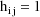
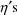
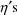
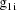
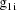
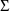
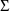
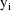
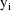

NONMEM Users Guide Part I - Users Basic Guide - Chapter F
F. Nonlinear Regression with One-Level Nested Random Effects
F.1 An Example
F.2 Implementation of the Example
F.2.1 Inputs
F.2.2 Selected Printout
NONMEM Users Guide Part I - Users Basic Guide - Chapter F
F. Nonlinear Regression with One-Level Nested Random Effects
F.1 An Example
In this chapter we return to
theophylline plasma concentration vs time data, but where
such data from 12 subjects, rather than from a single
subject, are available. This is done to illustrate a
regression with one-level nested random effects where the
regression function is nonlinear. The fact that the
regression function is nonlinear really does not introduce
any new considerations regarding the inputs required by
NONMEM. However, often with a nonlinear regression function
and one-level nested random effects, a modeling
approximation is necessary, and this is described here.
Also, this example does bring together a number of concepts
discussed in the earlier examples.
Each subject is given a single
oral dose, the same dose for each subject. Each subject has
a different weight. Often dose is expressed as the amount of
drug administered per unit weight of the subject
(weight-adjusted dose), and in this example the dose data
item is the weight-adjusted dose. However, a weight data
item is also included in the data record because it will be
assumed that interindividual differences in plasma
concentrations may be due to interindividual weight
differences beyond those expressed through weight-adjusted
dose. Also, 11 plasma concentrations are observed per
individual at different times, and these times vary between
individuals. (The clearance and rate constant measurements
used in the examples of chapter E are obtained from this
concentration vs time data and from similar data using an
additional five doses per subject.)
A model for the jth observation
from the ith individual might be given by
where
where
 ,
, and
,
, and
 are the (non-weight-adjusted) dose, time, and weight
variables. Here
and
are not subscripted with a j, indicating that the values of
the dose and weight variables do not vary within the
individual. This model is similar to one used in chapter C
for data from a single individual, but there are some
notable differences. First, the ith individual is regarded
as having his own set of pharmacokinetic parameters, these
parameters are denoted by
,
, and
. Second, two of the pharmacokinetic parameters are rate
constant of absorption,
, and rate constant of elimination,
, as previously, but the third basic parameter is clearance,
, rather than volume of distribution. Third, these
parameters are affected by random interindividual affects,
and thus random interindividual variability is expressed in
the model. Fourth, residual error is an intraindividual
effect. Note that an individual’s clearance is
linearly related to his weight as in chapter E. The
variance-covariance of the random interindividual effects,
are the (non-weight-adjusted) dose, time, and weight
variables. Here
and
are not subscripted with a j, indicating that the values of
the dose and weight variables do not vary within the
individual. This model is similar to one used in chapter C
for data from a single individual, but there are some
notable differences. First, the ith individual is regarded
as having his own set of pharmacokinetic parameters, these
parameters are denoted by
,
, and
. Second, two of the pharmacokinetic parameters are rate
constant of absorption,
, and rate constant of elimination,
, as previously, but the third basic parameter is clearance,
, rather than volume of distribution. Third, these
parameters are affected by random interindividual affects,
and thus random interindividual variability is expressed in
the model. Fourth, residual error is an intraindividual
effect. Note that an individual’s clearance is
linearly related to his weight as in chapter E. The
variance-covariance of the random interindividual effects,
 , is regarded as a full matrix in this example.
, is regarded as a full matrix in this example.
As stated in section A.1, with
the current version of NONMEM random effects must enter the
model (for the observations) linearly. This requirement is
not met in the above model; the random interindividual
effects enter nonlinearly. One device that has been found
useful under these circumstances is to approximate the above
model, A, with another, B, obtained by expanding A with a
first-term Taylor Series in the random effects about their
mean values (0). In the case at hand B is given by
where

Written this way, the model is
also displayed as the NONMEM linear model schematic. Use of
this first-order approximation to the original model, along
with use of the ELS objective function, has been called the
First-Order Method for analyzing nonlinear mixed
effects modeled data. This method has been shown to be
statistically efficacious in particular situations (Sheiner
and Beal, 1980, 1981, and 1983, and Beal 1984a). The
first-order approximation itself may be called the
First-Order Model. One practical problem with this
method is that it can require some nontrivial effort to
obtain the partial derivatives defining the g’s.
Moreover, there is little to be gained by examining these
derivatives. Indeed, rather than try to display explicit
formulae for the g’s in this example in this text, we
refer the reader to the PRED routine of Fig. 73 where code
is given for these formulae. Certain tools are available to
help the user obtain the first-order model. PREDPP is a
package which can be used with NONMEM and with
pharmacokinetic data and which automatically obtains the
derivatives
 , when, as in the example, the effect of the

is through
. PREDPP is actually a very elaborate PRED subroutine. It
then remains for the user to supply code for the derivatives
; these are relatively simple to obtain. Also, NM-TRAN, a
computer program which facilitates the problem of
constructing inputs to NONMEM, can be used to automatically
obtain the derivatives
. (Both PREDPP and NM-TRAN are distributed with NONMEM.)
, when, as in the example, the effect of the

is through
. PREDPP is actually a very elaborate PRED subroutine. It
then remains for the user to supply code for the derivatives
; these are relatively simple to obtain. Also, NM-TRAN, a
computer program which facilitates the problem of
constructing inputs to NONMEM, can be used to automatically
obtain the derivatives
. (Both PREDPP and NM-TRAN are distributed with NONMEM.)
Let I denote the number of
individuals. Also, for fixed i, let
denote the column vector of values of the
 , let

denote the column vector of values of the
, let
denote the column vector of values of the
, let

denote the column vector of values of the
, let
denote the column vector of values of the
 , let
denote the column vector of values of the
, and let
denote the column vector of values of the
. Then the ELS objective function is given by
, let
denote the column vector of values of the
, and let
denote the column vector of values of the
. Then the ELS objective function is given by
where
The last term in the expression
for
 is just a fancy way of writing the diagonal matrix whose
elements are all

. The matrix
is just a fancy way of writing the diagonal matrix whose
elements are all

. The matrix
 is the variance-covariance matrix of

. The vector
is the vector of weighted residuals from the observations
is the variance-covariance matrix of

. The vector
is the vector of weighted residuals from the observations
 . As with previous examples, it has the form residual
(vector) divided by standard deviation (matrix), and it is
"squared" in the expression for the objective
function. The weighted residuals are defined to be
the weighted residuals from all obervations
. As with previous examples, it has the form residual
(vector) divided by standard deviation (matrix), and it is
"squared" in the expression for the objective
function. The weighted residuals are defined to be
the weighted residuals from all obervations
 .
.
F.2 Implementation of the Example
F.2.1 Inputs
A code for PRED which implements
the example is given in Fig. 74. It is similar to that in
Fig. 1. However, the values returned in G are now very
different, and a value is also returned in H. The same rules
for determining what is returned in G and H, and that are
given in chapter E, apply here too. For clarity, code to
compute the partial derivatives that are returned in G is
indented from the other code. Note that in the expression
for F the weight-adjusted dose (DOSE) appears, rather than
the non-weight-adjusted dose, but that also THETA(3) occurs
in the denominator (E=THETA(3)*C) of that same expression,
so that weight itself need not enter this expression. On the
other hand, since
adds to mean clearance, weight does enter the expression for
G(3).
A control stream for this
example is given in Fig. 75. The data set is embedded in it.
Note that for readability and for the purpose of
conveniently keying the data, the weight-adjusted dose and
weight data items are blank for all data records of an
individual record except the first data record. The PRED
routine stores these data items in its local storage
whenever the first data record of an individual record is
passed to it (review the argument NEWIND described in
section C.3.5.2).
The initial STRUCTURE record for
the problem specification has 1’s in fields 7 and 8,
indicating that
 is a full matrix, but that
is a full matrix, but that
 is constrained to be diagonal. (Again, since
is constrained to be diagonal. (Again, since
 is a scalar, it can be regarded as an unconstrained
matrix, but for the sake of a more perspicuous problem
summary, it is taken to be diagonal.)
is a scalar, it can be regarded as an unconstrained
matrix, but for the sake of a more perspicuous problem
summary, it is taken to be diagonal.)
F.2.2 Selected Printout
The final estimate, standard
errors, and correlation matrix are shown in Figs. 76-78. It
may interest the reader to see how remarkably well the final
estimates in Figs. 66 and 76 agree for those parameters that
occur in both the model in section E.4 and the model in
section F.1. The final estimates of these parameters from
both figures, their standard errors, and the ratios of
standard error to estimate are given in Table F.2.2.i.
Recall that the estimates in Fig. 76 are obtained using
one-sixth the amount of data used to obtain the estimates in
Fig. 66, since in the present example only the concentration
data from one dose per individual are used, while in the
previous example this same data, plus similar data from five
additional doses per individual, are used.
Table F.2.2.i
Estimate Comparison
The first page of the requested
table is shown in Fig. 79. Scatterplots of residual vs time
and of weighted residual vs time, both separated by ID, are
requested. The four scatterplots corresponding to
individuals 4 and 5 are shown as examples in Figs.
80-83.
TOP
TABLE OF CONTENTS
NEXT